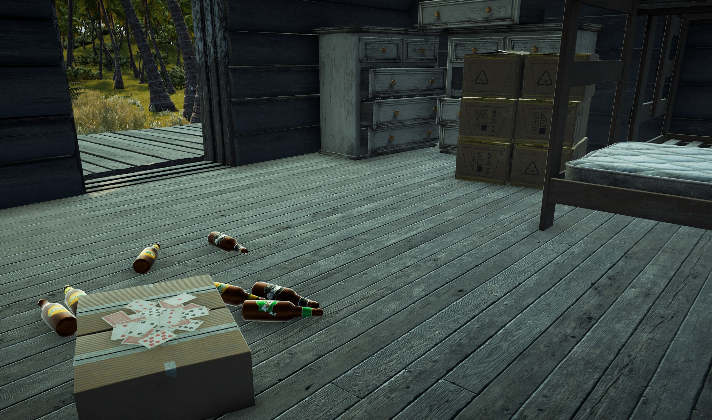
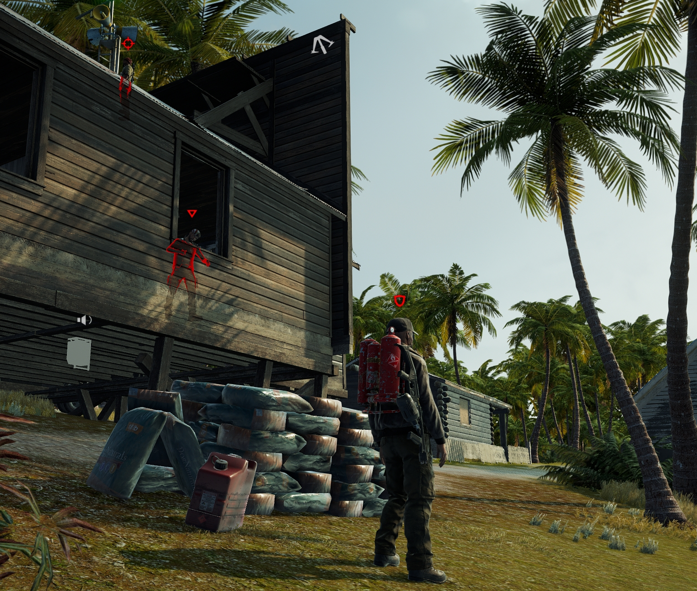
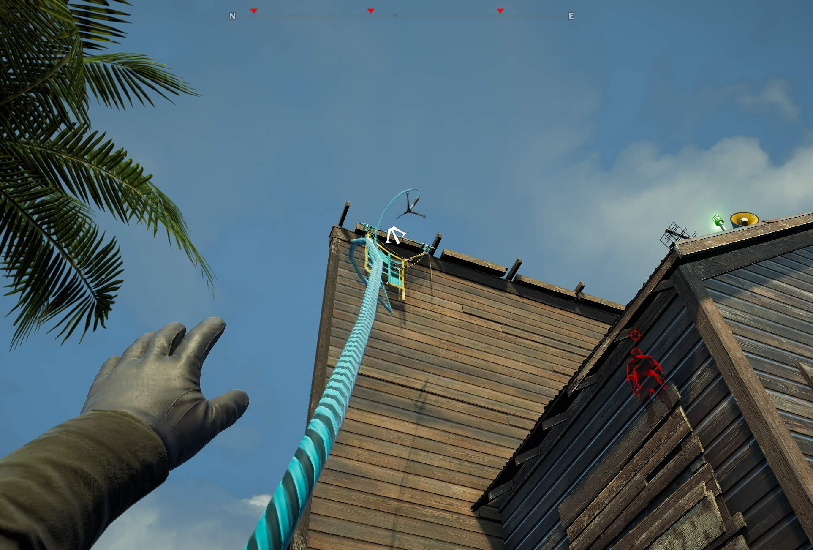
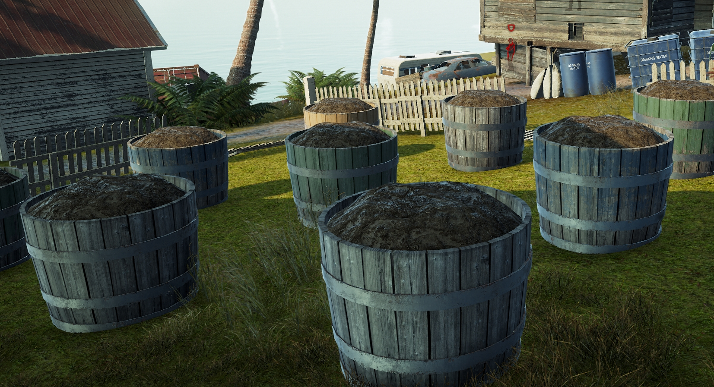
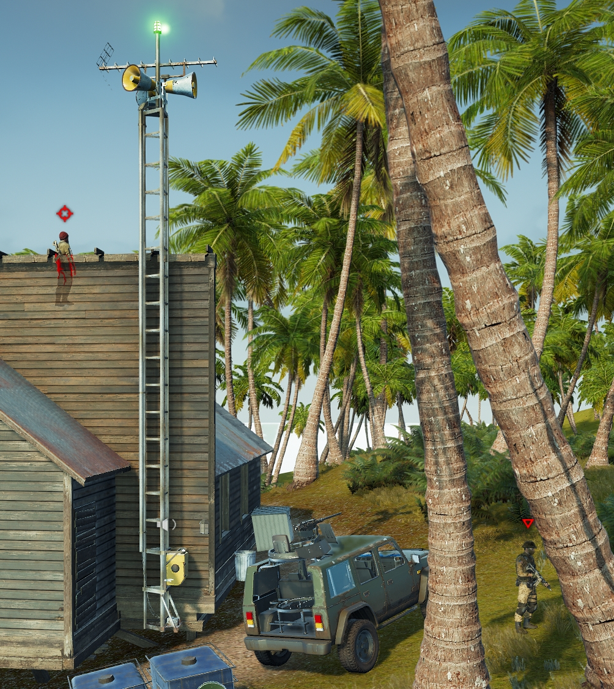
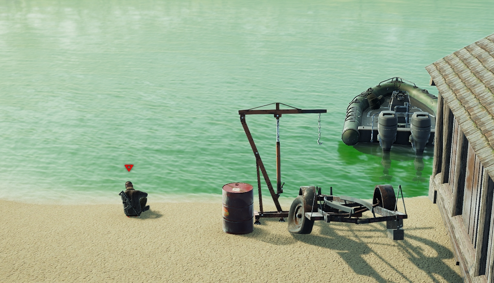
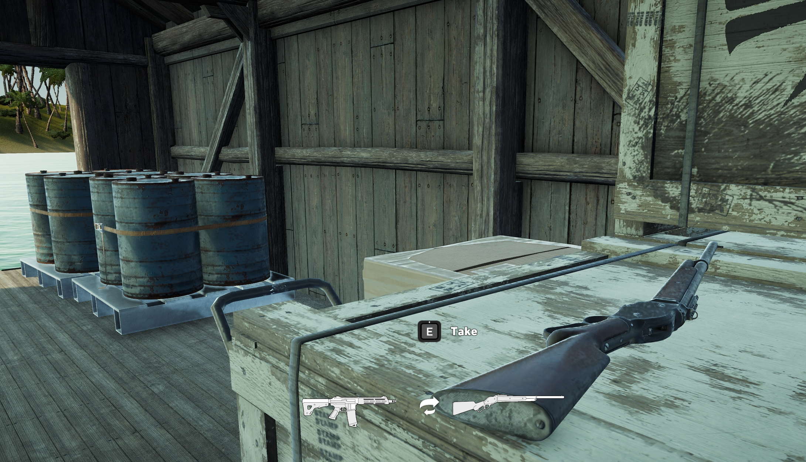

Far Cry 5 Outpost Level Design孤岛惊魂5 哨站关卡设计
Personal project to experience level editor个人项目 · 体验关卡编辑器
Design Goals:设计目标：
- Teaches the player how to have fun intuitively;直观地教会玩家怎么玩得开心；
- Rewards players' effort of exploration;回报玩家探索付出的努力；
- Has an engaging flow and rhythm;拥有有吸引力的动线与节奏；
- Prevents players from getting lost and have a clear perception of space and direction;避免玩家迷路，并让空间与方向感清楚；
- Gives players meaningful choices (multiple approaches);给玩家有意义的选择（多条接近路径）；
- Creates opportunities for players to write their own narratives and stories;给玩家写下自己叙事与故事的空间；
- Gives players a narrative context that is integrated with the story to immerse in.提供与主线故事咬合的叙事语境，方便沉浸。







Video Walkthrough视频演示
Reflection反思
- Effective design requires an effective combination of ideation and iteration.有效设计需要把构思和迭代真正结合起来。
- The goal of level design is to create immersive, interactive environments that engage players.关卡设计的目标，是做出能让玩家沉浸、愿意互动的环境。
- Using Far Cry 5 level editor allows for practicing real-world design while maintaining the integrity of core gameplay mechanics.用《孤岛惊魂5》关卡编辑器，可以在不破坏核心玩法的前提下练习真实制作流程。
- Successful level design must adapt to the unique mechanics of each game, which vary by genre.成功的关卡设计必须适配每款游戏独特的机制，而这些机制会随类型变化。